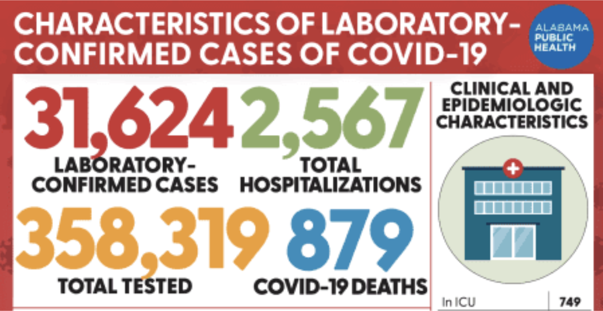

Bad Visualization Designs
Weather Design
We chose this as one of our examples of bad design for a number of reasons but primarily because a lot of the data encoded in this chart is misleading. This visualization is intended to reach anybody watching the news and convey information about the weather during the current day. It attempts to do so by encoding the weather data in a bar chart, using both line marks and spatial regions to encode the temperature and labeled icons to convey the percentage chance of rain. For example, the chart is labeled “Hour by Hour Forecast.” However, when you look at the labels on the x-axis, it is clear that bars are labeled in two hour increments rather than hour increments. Additionally, there is no y-axis so it is not possible to know what attribute the creators of this chart intended to encode with the bar height. However, the display suggests that they intended to encode the temperature data with the line mark at the bar height. If this is what the intention was, then the graph is very misleading because while the first two bars are labeled with the same temperature, they have different heights. Furthermore, the second and third bar are the same height, but different temperatures. The last two bars in the chart predict temperatures of 51º and 50º respectively, but the bar showing 50º is shorter than the bar showing 51º. Another issue with this chart is that both the bars for the 11 and the 1pm hours are not labeled. Similarly, only some of the bars have predictions for oncoming rain.

In redesigning this visualization, we tried to improve upon the truthfulness and beauty of the bar chart while still presenting the same data. We chose to maintain the basic bar chart structure in our redesign because we wanted the temperatures at different times to be easy to lookup and compare. A bar chart is well-suited for these functionalities. Some notable differences between our redesign and the original design are with the axes. In the original, there was no y-axis and the bars were instead just labeled with their numeric temperature data attribute. We chose to add a y-axis showing the temperature. Thus, for the value attribute of temperature, we encoded it using a line mark and the vertical spatial position channel to encode this quantitative data. This improves on the original because the original had bars of varying heights that we misleading (i.e. lower temperatures had higher bars). Additionally, in the original, the title implied that the chart showed the hour by hour forecast while in fact it actually used a single bar to represent every two-hour period. We changed this so that the categorical data was hourly. We encoded this categorical attribute of the hour using the horizontal spatial position channel .Instead of using an icon and a number to encode the chance of precipitation, we used a color gradient to encode that information. The lighter bars represent lower chance of percipitation and the darker bars represent a higher percent chance. A different redesign option that we did not chose but did consider was to display this information on an image of a clock. The temperature and chance of precipitation would then be encoded as icons with labels in each section of the clock. While this visualization may have looked more interesting than the bar chart that we chose, we decided that the purpose of the visualization was ultimately to give people an idea of what the temperature would be at each time of day and how it was going to change throughout the day. We wanted it to be easy for people looking at the visualization to look at it and be able to easily tell the temperature and likelihood of precipitation for that hour and we believed that the bar chart would provide that functionality the best even if it did not look as visually interesting.
Play Ball Design
The original version of this visualization is meant to display how each Major League Baseball team ranks for specific hitting and pitching statistics. Using the channel of length for its point/line marks as a way to display these rankings. The longer the line the higher the team is ranked for that specific stat. The visualization compares ten statistics for hitting, and ten statistics for pitching, displaying these lines in a circle. The pitching and hitting statistics are separated based on color, with blue being hitting and pink being pitching -- taking use of a color channel. While the visualization may be interesting to look at (taking advantage of the beauty aspect), it is actually ineffective and not functional in truly comparing teams. By looking at the visualization, it is hard to compare teams side by side -- the teams are even sorted alphabetically rather than by winning percentage. Using this visualization we are not able to get the full picture as to which team is performing best.
Play Ball VisualizationIn our new visualization we created a spider graph. In this visualization, we created two separate graphs, one for hitting statistics and one for pitching statistics -- this way we can compare these statistics on their own. Each corner on the graph represents a different statistic. We also included a filter which would allow us to select the teams we want to compare. For our marks we are utilizing points to indicate the rankings for each statistic, and areas to indicate the overall performance of the team as a whole, taking into account all of the statistics. In terms of channel, we use a color channel to encode different teams, and an area channel to show overall performance of a team. Our new visualization makes it easier to make direct comparisons between teams, increasing its functionality compared to the original visualization. By looking at the area of the graph we can determine which team has the best statistics. For example in our hitting chart we see that Team 1 has a higher area than Team 2, indicating that Team 1 ranks higher in its statistics and theoretically is the better team.
COVID-19 Design
The original design as seen above is not an effective method of representing any sort of COVID-19 data. Alabama Public Health released this graphic towards the middle of May, and it is clear to see they do not utilize any channels other than colors. The colors are each assigned to a separate category, with red attached to “Laboratory-confirmed cases”, green attached to “Total hospitalizations”, orange attached to “Total Tested”, and blue attached to “COVID-19 Deaths”. The data of the visualization is also completely unclear, as we do not know if these numbers apply to the entire Alabama population or per a certain subset of the population.
Our newest visualization can easily improve this design. We will be using a heat map, in which the outline of Alabama will be separated by county lines in order to separate the numbers into a digestible amount. Additionally, we will be starting with a new data field in which we track the average weekly cases per 100,000 people. Having this as the main filter will allow for the enlightenment of the COVID-19 situation to be seen. If viewers can see that daily cases are decreasing, they will feel not only enlightened with information, but much more hopeful for the future of their state. We will incorporate a filter in order to s witch between the various other categories, such as “Deaths”, “Laboratory Confirmed Cases”, etc. The main mark in our visualization will be the lines representing the counties, helping to increase the clarity of the visualization for the view. For our channel, we will be utilizing a color gradient in order to show the difference in numbers, for example in “Average daily cases per 100,000 people in the past week”. The gradient includes number markings in order to offer baselines for interpreting the gradient.